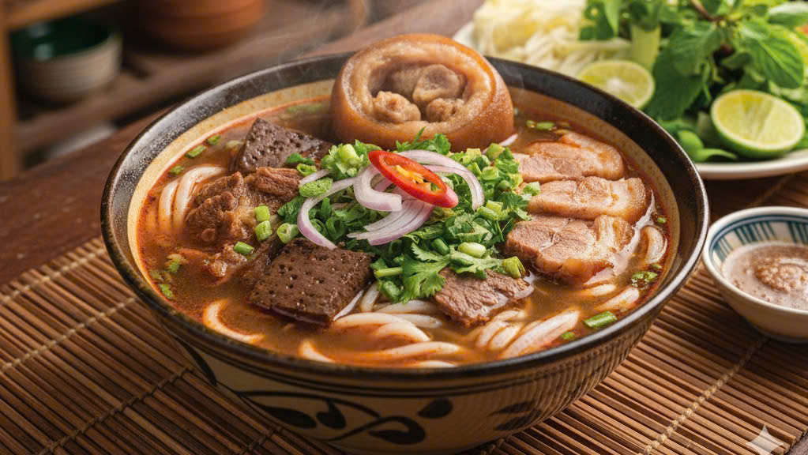

BÚN BÒ HUẾ
Nguyên liệu
Bò bắp, giò heo
Chả cua
Sả, hành, tỏi
Mắm ruốc Huế
Bún
Rau sống: giá, rau muống chẻ, hoa chuối
Cách làm
Hầm giò heo + thịt bò đến mềm.
Phi sả – tỏi – ớt rồi cho mắm ruốc vào, lọc lấy nước.
Cho vào nồi nước dùng, nêm muối, đường, mắm.
Luộc bún, cắt thịt, cho chả cua.
Chan nước dùng, ăn kèm rau.
Xem chi tiết ->